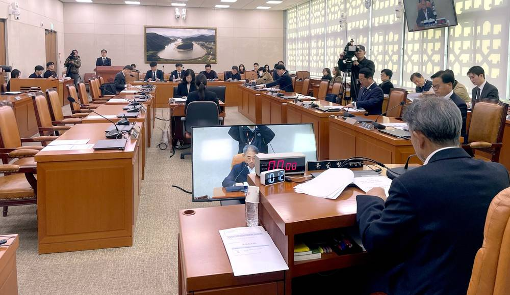

정치
'농지 특별조치법' 국회 공청회…"현장 혼란 수습 필요" 공감 속 "농지법 원칙 흔든다" 우려

농해수위 소위, 24일부터 법안 심사…임대차 최장 20년 허용·위반 처분 면제 범위 놓고 논쟁
농지 전수조사 결과에 따른 현장 혼란을 정리하기 위한 '특정농지 등의 정리에 관한 특별조치법' 제정 절차가 국회에서 시작됐다. 국회 농림축산식품해양수산위원회 농림축산식품법안심사소위는 12일 이 법안에 대한 입법공청회를 열었으며, 농업협동조합법 개정을 두고 갈등을 빚은 국민의힘은 참석하지 않았다.
법안은 올해 10월 31일까지 생긴 사안을 대상으로, 명백한 투기가 아니면 임대차·휴경 등 농지 소유·이용 위반이 있어도 처분·시정 명령이나 이행강제금·과태료를 부과하지 않도록 했다. 비농민 소유 농지가 농사에 쓰이도록 개인 간 임대차를 최장 20년까지 허용하는 조항도 담겼다.
공청회에서는 위반 농지를 그대로 처분하면 매물이 쏟아지고 실제 경작하는 임차농이 기반을 잃을 수 있다며 법 제정 필요성에 공감하는 의견이 나왔다. 반면 투기 판단 기준이 형식적이면 투기 농지까지 특례를 받을 수 있고, 성실하게 절차를 밟은 사람과의 형평성이 깨지며, 경자유전 원칙이 흔들릴 수 있다는 우려도 잇따랐다. 농해수위는 24일 소위부터 법안 심사에 들어가며, 당정은 연말까지 제정을 마친다는 구상이지만 쟁점이 많고 야당이 협조하지 않고 있어 일정은 불투명하다.
출처: 농민신문 2026-11-14 양석훈 원문 보기
시민이 만들고 지역이 소유하는 에너지 전환市民がつくり、地域が所有するエネルギー転換市民创造、地方拥有的能源转型An energy transition built by citizens, owned by communities제4섹터 방식 시민주도 지역에너지 공공개발第4セクター方式・市民主導の地域エネルギー公共開発第四部门模式 · 市民主导的地方能源公共开发Fourth-sector, citizen-led public development of local energy광고문의広告のお問い合わせ广告咨询Advertising ›